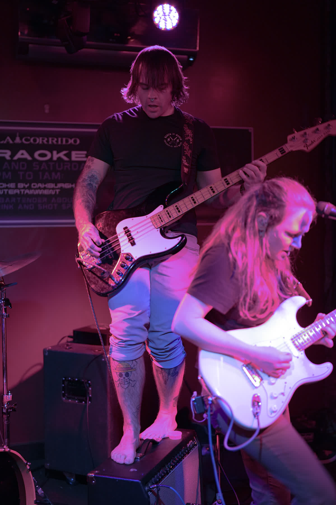

S/NC RECORDSSINGLE EPK

Animal Future
This Hell
SNCR-002 · SingleOut Sep 17, 2026 · 3:33
Rock / art rock
Rock / art rock
“It’s a wonder we haven’t all gone insane. Or have we?”
This indie alternative track rides heavy, resonant bass with powerful vocals that journey between angsty grit and aching tenderness — the turmoil of a mind that feels lost and small in an ever expanding universe. From the debut album Survived By, coming 2027.
“Evolved to know ourselves
Became conscious of this hell”
Became conscious of this hell”
“Perpetually Drained”
“Congratulations now
if you made it this far”
if you made it this far”

Written byWarren / Tyrie / Ford
Produced byKevin Cook & Doug Wooldridge
Mixed + masteredDoug Wooldridge @ S/NC Studio
Presspress@s-nc.org
Bookingbooking@s-nc.org
 Cover art · Survived By, 2027
Cover art · Survived By, 2027